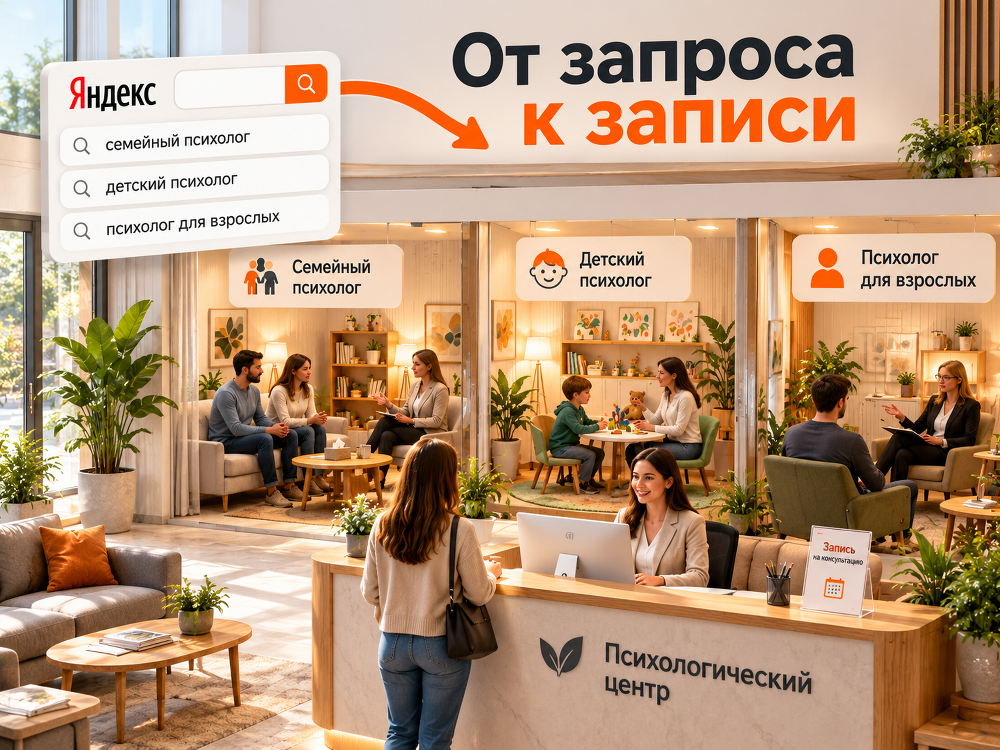

Блог о платном трафике
Продвижение психологического центра: как привлекать клиентов и получать записи
Продвижение психологического центра стоит начинать с трёх вещей: определить направления, на которые нужны клиенты, сделать понятные страницы специалистов и настроить учёт записей. Затем подключать каналы привлечения. Для центра с очным приёмом обычно полезны SEO, Яндекс Карты и реклама на Поиске Яндекса. Но последовательность зависит от загрузки психологов, географии и бюджета.
У центра есть преимущество перед частным специалистом: человек может выбрать психолога под конкретный запрос, возраст или формат работы. Это преимущество легко потерять, если сайт предлагает только общую кнопку «Оставить заявку», а посетителю непонятно, кто именно будет его консультировать.
С чего начать продвижение психологического центра
Сначала стоит разобраться, каких клиентов центр действительно готов принимать. Например, семейный психолог может быть загружен на две недели вперёд, а у детского специалиста остаются свободные часы. Одинаково активно рекламировать оба направления в такой ситуации нерационально.
Для каждого направления полезно зафиксировать четыре параметра: доступные часы приёма, стоимость встречи, формат (очно или онлайн) и запросы, с которыми работают специалисты. Отдельно проверить, кто отвечает на обращения и за какое время человек получает ответ. Можно купить рекламу, но потерять потенциального клиента, если никто не подтвердит запись.
Поисковый спрос тоже неоднороден. Запросы «семейный психолог», «детский психолог» и «психолог для взрослых» описывают разные задачи. Их не обязательно разносить по отдельным рекламным кампаниям, зато на сайте каждому направлению нужен понятный путь к подходящему специалисту.

Какие каналы продвижения выбрать
Я бы выбирал канал по тому, как человек ищет помощь и насколько быстро центру нужны новые записи. Для центра, который работает в конкретном районе, локальный поиск может быть важнее регулярных публикаций в социальных сетях. Если на сайте уже есть страницы услуг, но они пока не получают органический трафик, можно одновременно работать над SEO и тестировать платный Поиск.
| Канал | Какой спрос закрывает | Когда ставить в приоритет | Что оценивать |
|---|---|---|---|
| SEO | Поиск психологов, услуг и ответов на вопросы | Есть сайт, несколько направлений и возможность развивать страницы | Переходы по целевым запросам, обращения, записи |
| Яндекс Карты | Поиск центра рядом с домом или работой | Есть очный приём и конкретный адрес | Звонки, переходы, построение маршрутов, записи |
| Яндекс Директ на Поиске | Сформированный коммерческий спрос | Нужны обращения по приоритетным направлениям, готова посадочная страница | Цена целевого обращения и состоявшегося приёма |
| Экспертный контент | Вопросы до выбора психолога | Специалисты готовы отвечать на реальные вопросы аудитории | Переходы к услугам, записи после знакомства с материалом |
| Социальные сети и Telegram | Знакомство с командой, повторные контакты | Есть ресурсы регулярно публиковать содержательные материалы | Обращения и записи, а не только подписчики |
Здесь нет универсального победителя. Например, SEO может давать переходы на статью о первой консультации, а человек затем вернётся через Карты и позвонит. Если оценивать эти касания по отдельности, часть реальной роли каждого канала потеряется.
Каким должен быть сайт психологического центра
Сайт должен помогать человеку выбрать направление, специалиста и удобное время. На главной странице достаточно показать основные услуги и команду, а подробности лучше раскрывать на страницах направлений и конкретных психологов.
Страницы услуг
Если центр оказывает несколько самостоятельных услуг, разумно создать под них отдельные страницы. Например, для семейного, детского и индивидуального консультирования взрослых. Адреса вида «/semeynyy-psiholog/», «/detskiy-psiholog/» и «/psiholog-dlya-vzroslyh/» здесь приведены как пример структуры условного сайта.
На странице направления человек должен сразу увидеть, кому подходит услуга, какие специалисты её оказывают, как проходит первая встреча, сколько она длится и стоит. Если приём возможен только очно, лучше указать адрес ещё до формы записи. Если есть онлайн-формат, его условия тоже нужно объяснить отдельно.
Не нужно создавать отдельную SEO-страницу под каждую близкую формулировку проблемы. Если несколько запросов ведут к одной услуге и одному составу специалистов, полезнее собрать их на содержательной странице, чем множить почти одинаковые тексты.
Страницы специалистов
Страница психолога должна отвечать на вопросы, которые трудно закрыть общим описанием центра. Образование, подтверждённая квалификация, специализация, применяемые подходы, форматы консультаций, цена, продолжительность приёма и фотография помогают сравнить специалистов.
Особенно полезно прямо объяснить границы компетенций: с какими запросами психолог работает, а в каких случаях клиенту потребуется другой специалист. Такое описание честнее универсальной фразы «помогу с любой проблемой» и уменьшает число неподходящих обращений.
Как упростить запись
Заявка на первую консультацию не должна превращаться в длинную анкету о личных обстоятельствах. Для связи обычно достаточно имени или предпочтительного обращения, телефона либо другого канала связи и выбора направления. Уточнить детали можно позже в подходящем конфиденциальном процессе.
После отправки формы человеку важно увидеть, что запрос получен, и понять, когда с ним свяжутся. Если центр предлагает выбор времени, свободные слоты должны соответствовать реальному расписанию. Иначе рекламная заявка станет источником разочарования ещё до встречи.
SEO-продвижение психологического центра
В SEO я бы разделил спрос на коммерческий, локальный и информационный. У каждого типа запроса свой подходящий ответ.
| Поисковый запрос | Подходящая страница | Что должно быть на ней |
|---|---|---|
| «семейный психолог [город]» | Семейные консультации | Специалисты, формат, цена, запись |
| «детский психолог рядом» | Детское направление и локальная карточка | Возраст детей, специалисты, адрес, расписание |
| «психолог [имя специалиста]» | Страница конкретного психолога | Квалификация, специализация, условия приёма |
| «как проходит первая встреча с психологом» | Экспертная статья | Порядок консультации, правила конфиденциальности, ссылка на запись |
Город в примерах подставляется по фактическому месту работы центра. Создавать десятки страниц с заменой географического названия без реального присутствия в этих городах не стоит.
Коммерческие страницы я бы прорабатывал раньше большого блога: у них понятнее связь с записью. Информационные материалы нужны там, где специалист может дать самостоятельный полезный ответ. Например, объяснить, как проходит первая встреча, чем отличается семейная работа от индивидуальной и что спросить при выборе психолога.
В этой тематике особенно важна ответственность за содержание. Медицинские утверждения, диагнозы и рекомендации по лечению не должны появляться в тексте ради поискового трафика. У статьи должен быть указанный автор с реальной квалификацией, соответствующей теме. Материалы о психологических вопросах полезно проверять профильным специалистам центра.
Связывайте статью с подходящей услугой, а страницу услуги со специалистами. Так человек не окажется в тупике после чтения. SEO-результат при этом нужно оценивать по запросам и обращениям, а не только по общей посещаемости блога.
Яндекс Карты и локальное продвижение
Человек, который ищет очный приём, часто сравнивает несколько организаций ещё на карте: где находится центр, удобно ли добираться, есть ли фотографии кабинетов, какие отзывы оставляют посетители. Поэтому карточка в Яндекс Бизнесе заслуживает не меньшего внимания, чем отдельная страница сайта.
Проверьте адрес и положение метки, телефон, часы работы, список услуг и ссылку на сайт. Добавьте реальные фотографии входа, ожидания и кабинетов без людей, которые не соглашались на публикацию. Если в центре работают разные специалисты, укажите направления, а не ограничивайтесь общим описанием «психологическая помощь».
Отзывы особенно чувствительны: нельзя требовать от клиента публично рассказывать о причине обращения. Если организация отвечает на отзыв, ответ не должен подтверждать факт посещения или раскрывать обстоятельства консультации, о которых человек сам не говорил публично. Искусственные отзывы вместо этого создают риск для доверия к центру.
Карта и сайт должны давать одинаковые сведения о цене, адресе, формате услуг и графике. Иначе пользователь может выбрать время и место на основании устаревшей информации. Подробнее о возможностях канала писал в статье «Реклама в Яндекс Картах».
Яндекс Директ для психологического центра
Платную рекламу я бы начинал с запросов, где уже заметно намерение записаться: человек ищет конкретное направление, психолога в городе или консультацию в определённом формате. Посадочная страница должна продолжать обещание объявления. По запросу о детском психологе не стоит отправлять человека на общую главную страницу, где ему придётся заново искать нужный раздел.
При небольшом бюджете важнее контролировать качество запросов и отслеживать настоящие обращения, чем создавать множество микрокампаний. Разбивать спрос можно по существенным различиям услуг, но статистики для оптимизации должно хватать. Не стоит считать каждое нажатие на кнопку «Записаться» полноценной заявкой: посетитель мог открыть форму и закрыть её.
Модерация и ограничения
Необходимо заранее выяснить, какие услуги центр оказывает юридически и фактически. Немедицинские психологические консультации и медицинская деятельность регулируются по-разному. В правилах Яндекс Бизнеса указано, что обычные услуги психологов без упоминаний лечения, врачей и заболеваний принимаются без специальных документов; для медицинских услуг требуется лицензия, а её данные должны соответствовать сайту и объявлению.
Объявления с обещаниями гарантированного результата, излечения или полной безвредности недопустимы для медицинской рекламы. Правила для онлайн-медицинских услуг также отличаются от правил для очного приёма. Перед запуском нужно проверить актуальную категорию модерации для конкретной услуги, а не ориентироваться только на слово «психолог» в названии центра.
Часть психологических тематик относится к деликатным. Поэтому не следует заранее закладывать в медиаплан ретаргетинг по людям, посещавшим страницы о личных проблемах, и рассчитывать на свободное применение поведенческих аудиторий в сетях. Доступные способы показа определяются правилами Яндекса для конкретной тематики.
Подробную семантику, структуру кампаний и работу с РСЯ я разобрал отдельно в материале «Реклама психологического центра».
Реальный кейс продвижения центра психологии в Липецке
В моей практике был проект психологического центра в Липецке. До перенастройки рекламный кабинет был раздроблен на большое количество кампаний. На предыдущем этапе израсходовали около 71 000 ₽, но в отчётах использовались автоматические цели, включая нажатия на элементы сайта. По этим данным нельзя было надёжно определить число настоящих обращений.
Я перенастроил цели на фактическую отправку формы и завершение квиза. С учётом ограниченного бюджета сначала сосредоточил рекламу на Поиске Яндекса и проработал семантику, исключая нецелевые запросы.
За следующий описанный этап при расходе около 15 000 ₽ получили 22 обращения. Средний CPL оказался менее 700 ₽. Если разделить округлённый расход 15 000 ₽ на 22 обращения, получится примерно 682 ₽ за обращение; это проверка арифметики, а не отдельный точный показатель отчёта.
У этого результата есть две существенные границы. Прежние автоматические цели не позволяли сравнить качество заявок с новым периодом, поэтому нельзя честно объявить, во сколько раз улучшилась стоимость реального обращения. А 22 обращения ещё не означают 22 состоявшиеся консультации: для этого потребовались бы данные администратора о записях и посещениях.
Подробности опубликованы в кейсе центра психологии в Липецке. Его показатели показывают результат конкретного проекта, а не среднюю стоимость лида для всех психологических центров.
Сколько стоит привлечение клиента психологического центра
Стоимость клика и стоимость обращения сами по себе мало говорят об экономике центра. Для управленческого решения полезнее последовательно считать цену заявки, подтверждённой записи и состоявшегося приёма.
Формулы простые:
- CPL = рекламный расход / количество обращений.
- Стоимость записи = рекламный расход / количество подтверждённых записей.
- Стоимость состоявшегося приёма = рекламный расход / количество состоявшихся первых приёмов, связанных с этой рекламой.
Рассмотрим условный расчёт, который не относится к кейсу в Липецке. Допустим, центр потратил на рекламу 30 000 ₽, получил 30 обращений, из них 18 человек подтвердили запись, а 15 пришли на первую встречу.
| Показатель | Условное значение |
|---|---|
| Рекламный расход | 30 000 ₽ |
| Обращения | 30 |
| Подтверждённые записи | 18 |
| Состоявшиеся первые приёмы | 15 |
| CPL | 1000 ₽ |
| Стоимость подтверждённой записи | примерно 1667 ₽ |
| Стоимость состоявшегося приёма | 2000 ₽ |
Если центр видит только рекламный кабинет, ему кажется, что привлечение стоит 1000 ₽. После учёта записей и неявок цена первого состоявшегося приёма оказывается вдвое выше. При этом 2000 ₽ всё ещё нельзя назвать стоимостью полноценного клиента на весь срок работы: неизвестно, сколько человек придут повторно, какая доля выручки останется центру после оплаты специалиста и других расходов.
Для расчёта допустимого CPL можно идти от экономики в обратную сторону. Например, если центр готов тратить максимум 1800 ₽ на один состоявшийся первый приём и ожидает, что из каждых 10 обращений 5 закончатся встречей, предельная стоимость обращения при этих допущениях составит 900 ₽ (1800 × 50%). Меняется доля посещений, меняется и допустимый CPL. Это модель для планирования, не рыночный норматив.
Важно учитывать загрузку. Даже хороший CPL не поможет, если у востребованного специалиста нет свободного времени для новых клиентов. В этом случае бюджет разумнее перераспределить на направления, где центр может принять людей без длительного ожидания.
Как повысить доверие и конверсию сайта
Посетитель психологического центра принимает решение в условиях неопределённости: он ещё не знаком со специалистом, но уже должен доверить ему личную информацию. Поэтому конкретные сведения о работе центра обычно полезнее общих обещаний «индивидуального подхода».
Покажите команду и квалификацию без преувеличений, объясните, как проходит первый приём, укажите стоимость и продолжительность консультации. Хорошо работает понятное объяснение правил переноса и отмены записи. Если человек может сначала задать организационный вопрос, это тоже стоит обозначить.
Отзывы можно публиковать только на законном основании и с учётом конфиденциальности. Не нужно размещать переписку клиента, его историю или подробности консультации ради доказательства эффективности. Сведения о состоянии здоровья относятся к специальным категориям персональных данных по статье 10 закона № 152-ФЗ, поэтому сбор и передача таких данных требуют особой осторожности.
Маркетинговой аналитике обычно достаточно обезличенных событий и статусов: обращение принято, запись подтверждена, приём состоялся. Причины обращения, медицинские сведения и содержание консультаций не должны попадать в рекламные системы ради оптимизации кампании.
Как оценивать эффективность продвижения
На практике трафик может прийти из Яндекс Директа, органического поиска или Карт, а само обращение поступить через форму на сайте или телефон. Это разные измерения: источник показывает, откуда пришёл человек; способ связи показывает, как он обратился. Их нельзя складывать как независимые источники без риска двойного учёта.
Для оценки качества продвижения достаточно начать с единого учёта статусов: получено обращение, подтверждена запись, состоялся первый приём. Отдельно стоит фиксировать отмены и неявки. Данные можно вести в CRM или в аккуратной таблице, если обращений пока немного. Главное, чтобы один человек не превращался в три «лида» после звонка, повторной формы и сообщения в мессенджере.
В отчёте полезно сравнивать направления, а не только каналы. Например, семейные консультации могут давать обращения дороже, но чаще доходить до первой встречи. Тогда сравнение одного CPL приведёт к неверному решению об отключении более дорогого направления.
Начните с трёх управленческих вопросов: сколько новых людей обратилось, сколько из них записалось и сколько фактически пришло. Когда учёт станет стабильным, добавляйте повторные посещения, выручку и маржинальность. О соединении рекламных и CRM-данных подробнее писал в материале «Сквозная аналитика Яндекс Директа».
Порядок запуска продвижения психологического центра
- Проверить загрузку специалистов. Выбрать направления, которым нужны новые записи и по которым есть свободные часы.
- Привести в порядок страницы услуг. Указать специалистов, формат, стоимость, расписание и способ записи. Проверить сайт на телефоне.
- Настроить учёт. Разделить отправку формы, подтверждённую запись и состоявшийся приём. Исключить дубли обращений.
- Обновить Яндекс Карты. Сверить адрес, услуги, фотографии, контакты и часы работы с сайтом.
- Запустить ограниченный тест Поиска Яндекса. Сосредоточиться на сформированном спросе, проверить соответствие объявлений и посадочных страниц. Не дробить кампании без необходимости.
- Развивать SEO. В первую очередь улучшать коммерческие страницы, затем отвечать на вопросы потенциальных клиентов в экспертных материалах.
- Перераспределять бюджет по фактическим приёмам. Учитывать цену состоявшейся встречи, доступность специалистов и качество обработки обращений.
Первое расширение бюджета имеет смысл обсуждать после того, как центр видит не только количество заявок, но и число людей, действительно дошедших до консультации.